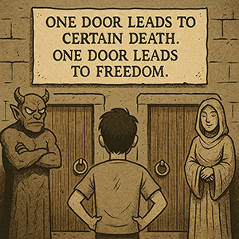

L'énigme des deux portes
Vous êtes
devant 2 portes : l'une mène à la liberté, l'autre à une mort certaine.

Devant chaque porte se tient un gardien.
L'un des gardiens dit toujours la vérité, tandis que
l'autre ment toujours.
Vous ne savez pas quel gardien est lequel.
Vous avez le droit de poser
une seule question
à l'un des gardiens pour déterminer quelle porte mène à la liberté.
Quelle question posez-vous ?
- Vous ne posez pas de question et aller au hasard
- Vous demandez à l'un des gardiens : "Si je demandais à l'autre gardien quelle porte mène à la liberté,
que me répondrait-il ?" Puis, vous choisissez la porte opposée à celle indiquée par le gardien.
-
Vous demandez à l'un des gardiens: "Quelle porte mène à la liberté ?" et vous choisissez la porte indiquée.
Résultat...
Vous traversez la porte choisie. C'était une ruse, derrière les deux portes se cachait un piège mortel. Votre héros est mort.
Game over.
Pour ce laboratoire, n'oubliez pas de valider votre code HTML avec le validateur du
W3C